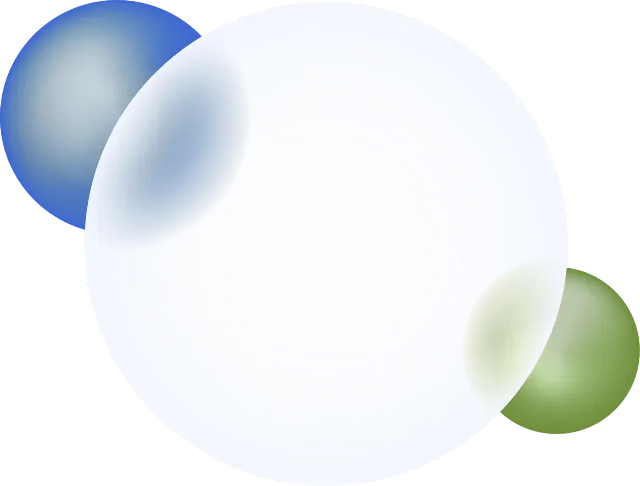
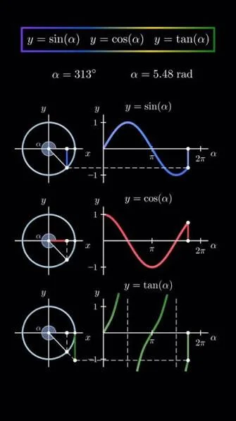
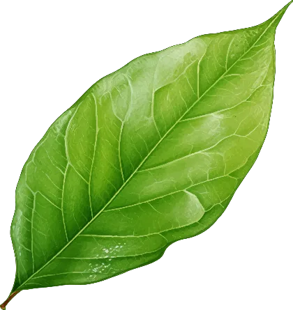
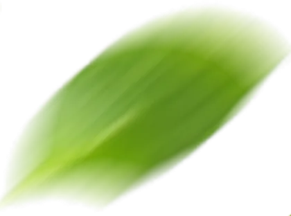
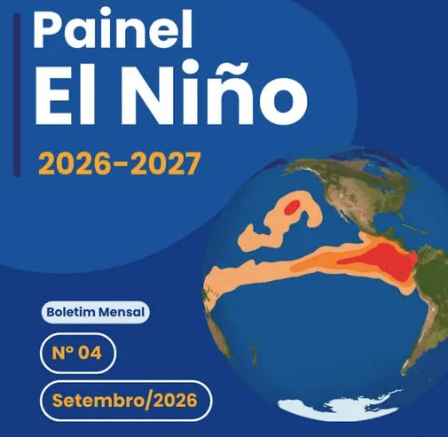
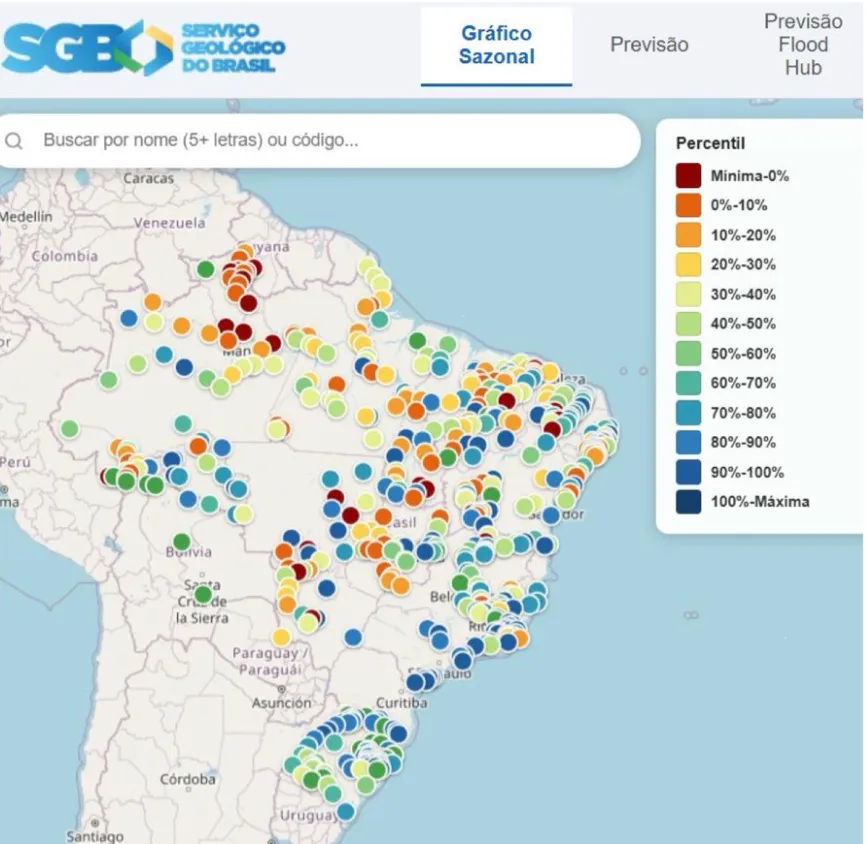
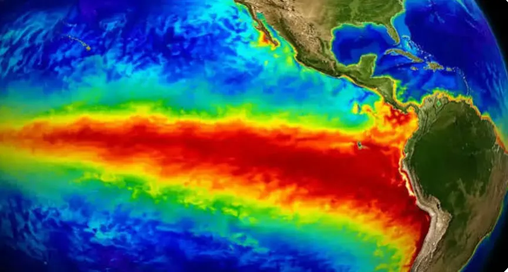
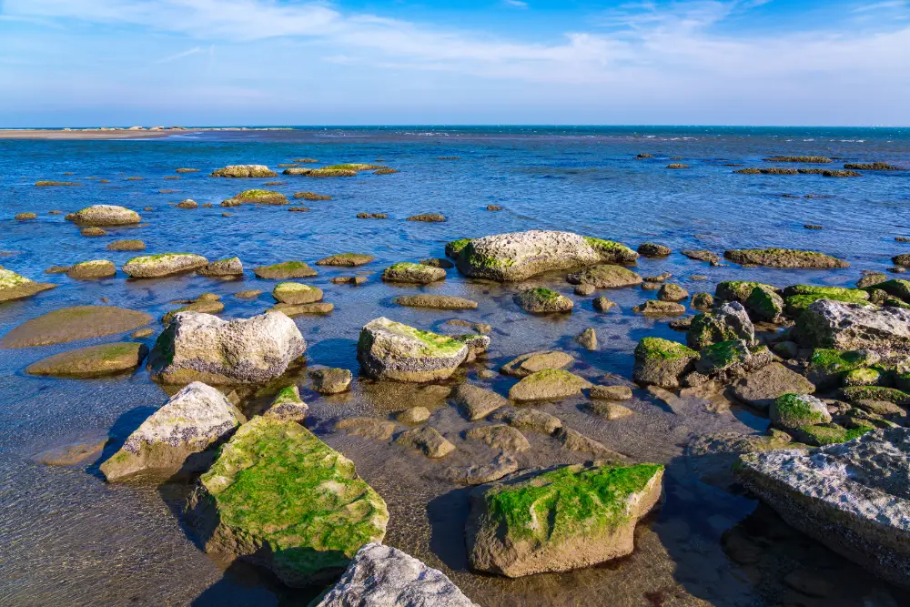
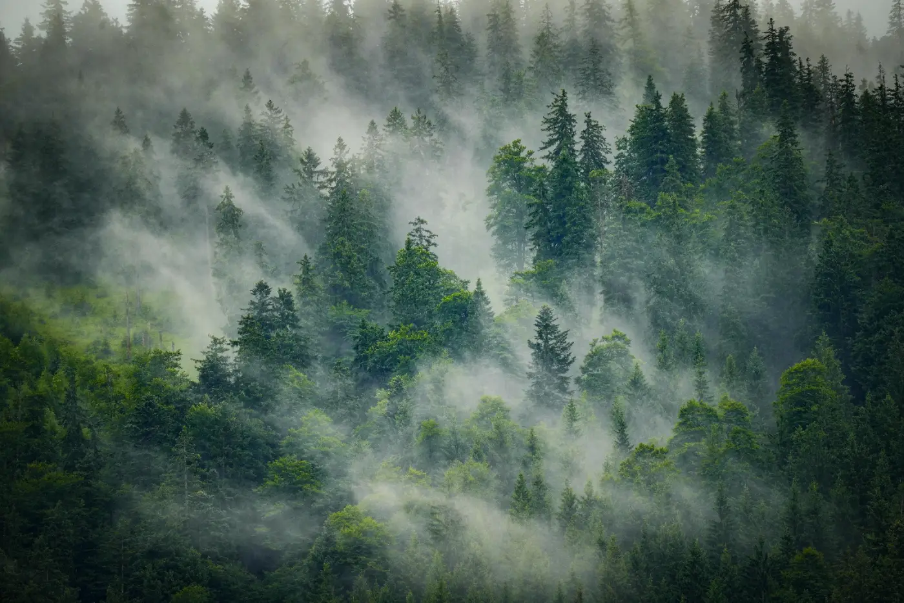

A Matemática do El Niño
Joelma Iamac Nomura
de Matemática III
UFABC

Role para explorar ↓Resolução de problemas
Fenômenos periódicos


Um fenômeno periódico se repete em intervalos iguais. Mova o controle e veja quantas cheias cabem em 3 anos.
Contextualizaçãodo plano


O que é El Niño?
El Niño
O El Niño é caracterizado pela variação de temperatura das águas do oceano: no El Niño, as águas ficam mais quentes do que o normal; na La Niña, ocorre o resfriamento dessas águas.

Serviço Geológico do Brasil (SGB).
Compare as fases
El Niño
Glossário INMET
Impactos do El Niño nos rios brasileiros
As alterações climáticas provocadas pelo El Niño influenciam os níveis dos rios. O mapa do Serviço Geológico do Brasil apresenta essas variações, comparando os níveis observados com os registros históricos.

Serviço Geológico do Brasil (SGB). Cores quentes: níveis perto da mínima histórica; azuis: perto da máxima.
Proposta do Plano de Aula I
Diante da proposta da discente, o Plano de Aula I da disciplina tem como proposta a abordagem dos seguintes tópicos:
O El Niño e os níveis dos rios viram dados reais para a turma medir, comparar e interpretar.
As atividades seguem as quatro etapas de Polya, e o professor atua como mediador.
Cheias e estiagens que se repetem ao longo do ano são modeladas com as funções seno e cosseno.
Plano deaula
Caracterização
- Tema:
- Fenômenos Periódicos e Interpretação Gráfica
- Público-alvo:
- 1ª à 3ª série do Ensino Médio (2ª SÉRIE EM)
- Área:
- Matemática, em diálogo com Ciências da Natureza.
- Contextualização:
- influência do fenômeno El Niño no regime de chuva e nos níveis dos rios brasileiros
Conteúdos matemáticos
Objetivo geral
Utilizar conhecimentos matemáticos para investigar e interpretar fenômenos reais, relacionando variações dos níveis dos rios com padrões periódicos e suas representações gráficas.
Objetivos de aprendizagem e habilidades
Toque num objetivo para ver as habilidades e competências ligadas a ele.
Habilidades
Competências específicas
- 1- Uso da matemática em contextos diversos
- 3- Uso dos campos da matemática para construção de modelos e resolução de problemas
- 4- Representação e comunicação
Metodologia
Resolução de problemas
George Polya
Papel do professor
Orienta as perguntas, não entrega as respostas.
Recursos didáticos
- Boletins e dados do SGB/SACE;
- Smartphones ou computadores com acesso à internet;
- Projetor e lousa;
- Planilhas, gráficos e simuladores matemáticos.

Sequência de Aulas
Avaliação e Resultados Esperados
Critérios de avaliação
Marque o que for observado em cada grupo.
Resultados esperados
- Compreensão das funções periódicas a partir de fenômenos reais;
- Desenvolvimento da capacidade de interpretar e construir gráficos;
- Aproximação entre Matemática e Ciências da Natureza;
- Desenvolvimento da investigação, argumentação e pensamento crítico;
- Compreensão de que modelos matemáticos representam a realidade por aproximações e possuem limitações.
Atividadesdo plano
Recursos
Portal SACE, boletins hidrológicos, computadores ou smartphones, planilhas eletrônicas, papel, lápis e calculadora.
Produto Esperado
Tabela cronológica, interpretação dos gráficos, cálculos e registro das conclusões do grupo.
Atividade · marque as etapas
Atividade 01
Investigando as variações dos níveis dos rios brasileiros
Objetivo: Interpretar dados reais dos níveis dos rios, identificando variações, máximos, mínimos e possíveis regularidades ao longo do tempo.
Situação-problema:
Vocês foram convidados a integrar uma equipe de cientistas de dados vinculada a um projeto de monitoramento dos rios brasileiros. A equipe precisa investigar o comportamento dos níveis dos rios em diferentes regiões do país, utilizando os dados históricos disponibilizados pelo Serviço Geológico do Brasil (SGB).
Cada equipe será responsável por uma bacia hidrográfica e deverá analisar os registros hidrológicos disponíveis, buscando identificar como os níveis dos rios se comportam ao longo dos meses e dos anos.

Atividade
Analisar uma situação hipotética de variação do nível de um rio, representada pela função:
Em que:
- h(t) representa o nível do rio, em metros;
- t representa o tempo, em meses;
- t = 0 corresponde ao início do período analisado.
Retrospectiva
- Os procedimentos utilizados foram suficientes para resolver todas as questões?
- Discutir as diferenças entre uma função periódica matemática e o comportamento real de um rio.
- Quais cuidados devemos ter ao interpretar fenômenos naturais por meio de funções periódicas?
Atividade 02
Explorando as funções seno e cosseno
Objetivo: Resolver situações-problema envolvendo funções seno e cosseno, identificando amplitude, período, linha média, máximos, mínimos e intervalos de crescimento e decrescimento, relacionando esses conceitos aos comportamentos investigados na atividade anterior.
Situação-problema:
Após a primeira etapa da investigação, as equipes de cientistas de dados identificaram que alguns rios apresentam variações que podem indicar comportamentos periódicos. Entretanto, para compreender matematicamente essas variações, é necessário utilizar conhecimentos sobre funções periódicas.
Laboratório da função · h(t) = D + A · cos(2πt / P)
Confira as respostas para h(t) = 8 + 3 cos(πt/6)
Atividade
Questões norteadoras
- A bacia investigada apresentou indícios de comportamento periódico?
- Os períodos de cheia e estiagem apresentaram regularidade?
Atividade 03
Comparando os comportamentos dos rios e investigando as influências climáticas
Objetivo: Analisar os resultados da investigação de cada bacia hidrográfica, identificar possíveis padrões periódicos e discutir as influências dos fenômenos climáticos nas variações dos níveis dos rios brasileiros.
Situação-problema:
Após investigar os dados da bacia hidrográfica atribuída ao seu grupo e resolver situações-problema envolvendo funções periódicas, as equipes de cientistas de dados deverão apresentar seus resultados.
Socialização · até 10 minutos por grupo
Ao final das apresentações, a turma realiza uma comparação coletiva das cinco bacias, discutindo os padrões identificados e as possíveis influências climáticas.
Quadro síntese
| Etapas de Polya | Atividades relacionadas | Desenvolvimento | Taxonomia de Bloom | Justificativa |
|---|---|---|---|---|
| 1. Compreensão do problema | Atividade 1 | Os estudantes assumem o papel de cientistas de dados, conhecem o problema e investigam os registros hidrológicos do SGB/SACE. | Identificar, interpretar, organizar e analisar. | Reconhecer informações, interpretar dados, organizar tabelas e analisar os gráficos hidrológicos. |
| 2. Elaboração do plano | Atividade 1 | Definem estratégias para organizar os dados, interpretar os gráficos e identificar possíveis regularidades. | ||
| 3. Execução do plano | Atividades 1 e 2 | Analisam os dados reais e, posteriormente, resolvem situações-problema utilizando as propriedades das funções seno e cosseno. | Compreender, aplicar, analisar e avaliar. | Compreender as propriedades das funções, realizar cálculos, interpretar gráficos e verificar os resultados. |
| 4. Retrospectiva | Atividade 3 | Comparam os resultados das cinco bacias, verificam as estratégias utilizadas e elaboram conclusões sobre a periodicidade e os fenômenos climáticos. | Analisar, avaliar e elaborar. | Comparar diferentes bacias, avaliar as estratégias e elaborar conclusões fundamentadas. |
Apresentaçãodo site
Referências bibliográficas
Rascunho: o slide ainda está sem referências; o grupo deve conferir- ANDERSON, L. W.; KRATHWOHL, D. R. (org.). A taxonomy for learning, teaching, and assessing: a revision of Bloom's taxonomy of educational objectives. New York: Longman, 2001.
- BRASIL. Ministério da Educação. Base Nacional Comum Curricular. Brasília: MEC, 2018.
- POLYA, G. A arte de resolver problemas: um novo aspecto do método matemático. Rio de Janeiro: Interciência, 1995.
- SERVIÇO GEOLÓGICO DO BRASIL (SGB). Painel El Niño 2026–2027: boletim mensal nº 04, setembro de 2026.
- SERVIÇO GEOLÓGICO DO BRASIL (SGB). Sistema de Alerta de Eventos Críticos (SACE) e boletins hidrológicos.
- INSTITUTO NACIONAL DE METEOROLOGIA (INMET). Glossário: El Niño e La Niña.
Obrigado(A)!

Perguntas? Experimentem o laboratório da função na Atividade 02.
Ana Carolina · Camila Lourenço · Gabriel Matos · Júlia Campos · Kauan Franca · UFABCAcesse pelo celular
Aponte a câmera para o código e explore as atividades no seu ritmo.